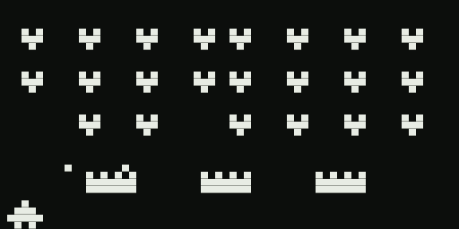
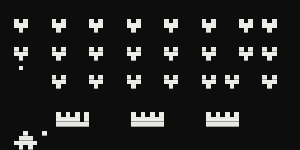
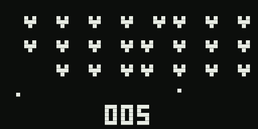

Castle Invaders
D.A. Trabucco · DREAMER no. 11 (1981-07) p. 17 1K RAM



Space Invaders in a castle setting: man the cannon and shoot invaders (5 points) and commanders (15 points) with 30 bombs. The game ends when the bombs run out, the invaders reach the castle or your cannon is hit. The score is shown at the end and any key restarts.
Keys
8 left, A right, 9 fire.
Files
| File | Version | Load | Run |
|---|---|---|---|
| Castle Invaders.d68 | main | 0080-03FF | C000 |
Listing as transcribed (with notes): castle_invaders.txt
Source
DREAMER no. 11 on archive.org, p. 17 (PDF page 19). Author: D.A. Trabucco.
Corrections applied
None.
Open doubts
- 0080-00DF is partly not printed and 0110-01FF not printed (zeros).
- 00E4 = 391E has a hand mark; kept.
- Hand-written key remaps (0259, 0263, 0273) ignored.
- A natural game over was not reproduced.